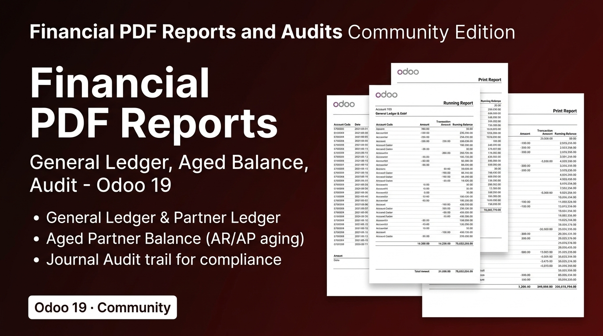
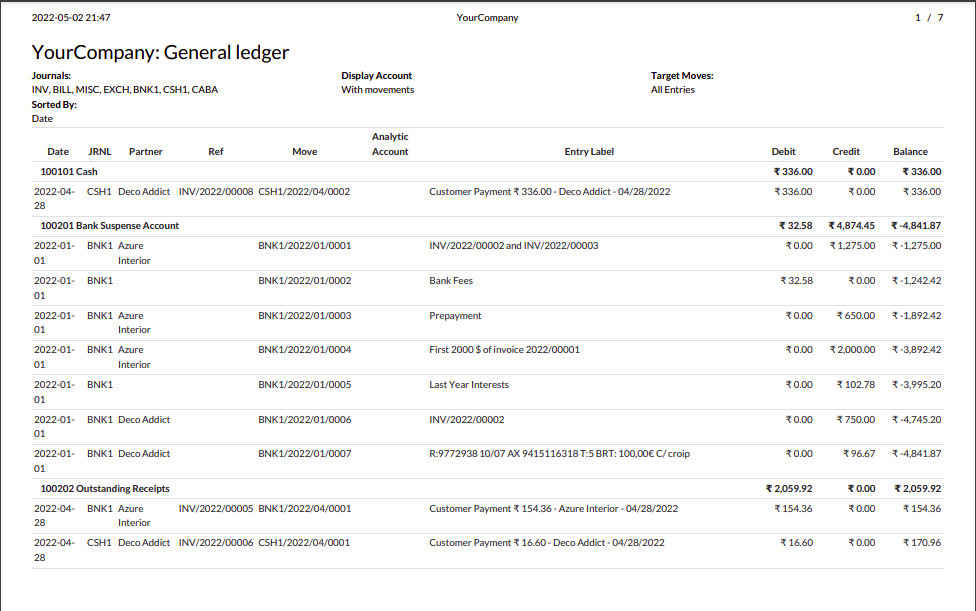
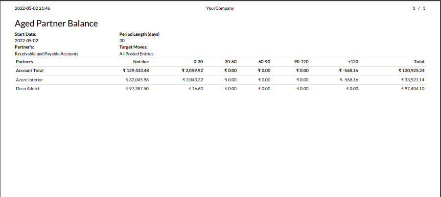
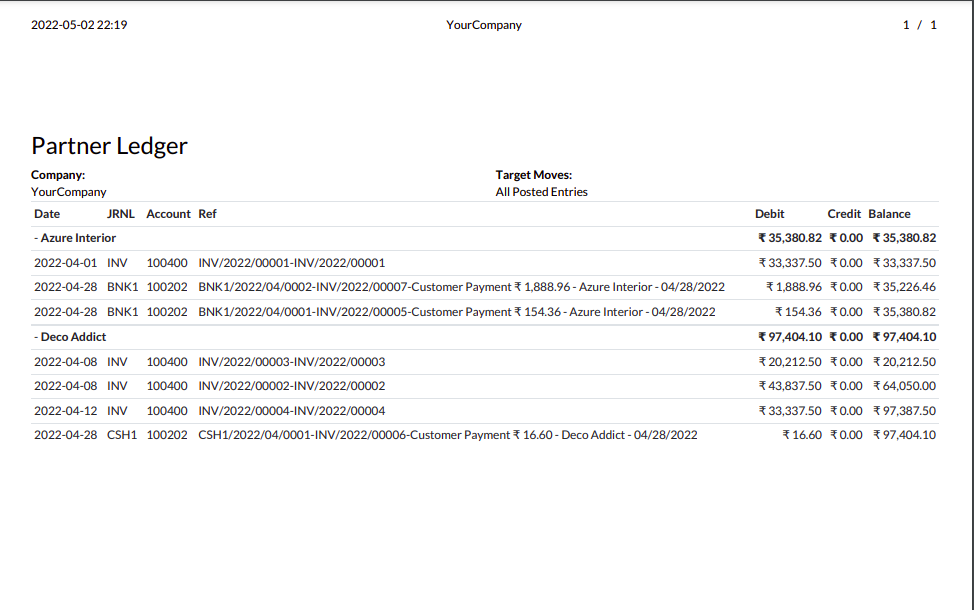
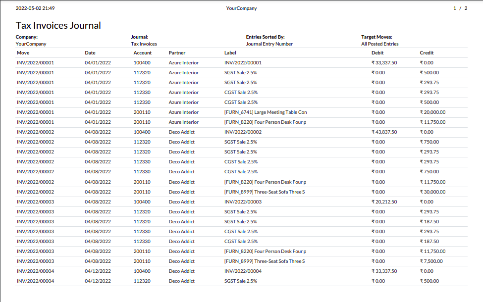
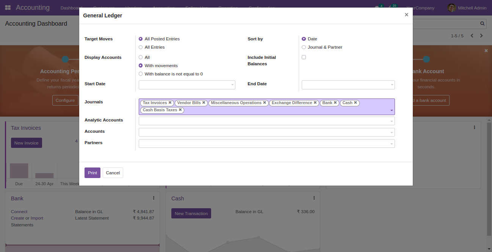
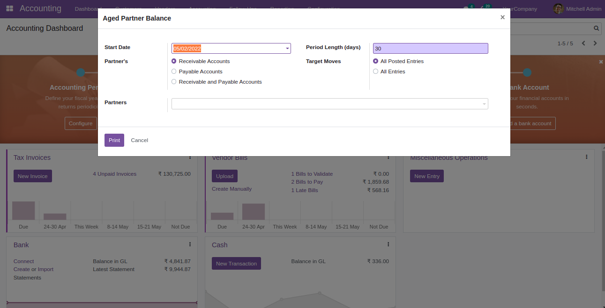

General Ledger, Partner Ledger, Aged Partner Balance, and Journal Audit reports - all in print-ready PDF format.
Every report your auditors and accountants need - in PDF format.
Complete ledger with all entries per account filterable by date and journal.
All transactions per customer or supplier with running balance.
Overdue analysis with aging buckets: 0-30, 30-60, 60-90, 90+ days.
Full journal audit trail with entry details for compliance reporting.
Generate a detailed General Ledger report with opening balance, all journal entries, and closing balance per account - filterable by date range, journal, and company.


See exactly how overdue your customer and supplier balances are with aging buckets - essential for cash flow management and collection prioritization.
Track all transactions per partner and get a complete journal audit trail for compliance reporting.


Each report has flexible filters - set date range, journals, accounts, and partners before generating.


| Feature | What it provides |
|---|---|
| General Ledger | All entries per account with opening and closing balances. |
| Partner Ledger | All transactions per customer or supplier with running balance. |
| Aged Partner Balance | Aging analysis in configurable buckets for AR/AP management. |
| Journal Audit | Complete journal audit trail for compliance and external audits. |
| PDF Export | All reports export to clean, professional PDF format. |
Professional financial reporting - no Enterprise license needed.